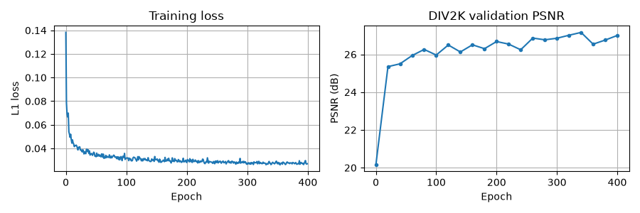
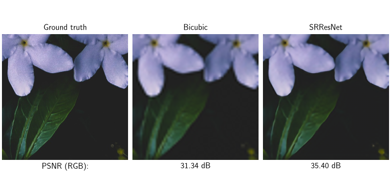
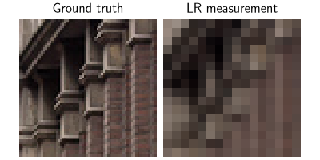
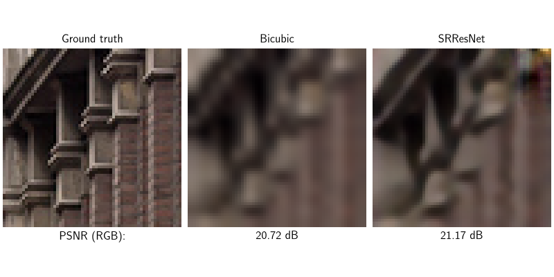

Note
New to DeepInverse? Get started with the basics with the 5 minute quickstart tutorial..
Super-resolution with SRResNet#
Single-image super-resolution (SISR) is the inverse problem of recovering a high-resolution (HR) image \(x\) from a low-resolution (LR) observation \(y = \downarrow_s(x)\), where \(\downarrow_s\) denotes downsampling by factor \(s\).
Unlike physics-aware methods in DeepInverse (iterative algorithms, unrolled
networks, diffusion models) that require the forward operator at inference,
SRResNet [1] is a direct feed-forward
network: it maps LR images to HR estimates in a single forward pass without
needing the degradation model at test time. Inference is simply model(y).
This example demonstrates:
Inference with weights pretrained on DIV2K for 4× RGB bicubic super-resolution.
Fine-tuning with
deepinv.Trainerto show the model is fully trainable.
import torch
import matplotlib.pyplot as plt
import deepinv as dinv
device = dinv.utils.get_device()
Selected GPU 0 with 8559.25 MiB free memory
1. Inference with pretrained weights#
The default SRResNet was trained for RGB 4× super-resolution on DIV2K under
the L1 loss, using DownsamplingMatlab (MATLAB-style
bicubic downsampling, factor 4), ADAM with lr 5e-4 at batch size 16,
and random 128×128 HR crops for 400 epochs.
Note
The pretrained checkpoint uses the default architecture with final_relu=True.
model = dinv.models.SRResNet(pretrained="download", final_relu=True).to(device)
We can visualise the training loss and validation PSNR on DIV2K stored inside the checkpoint.
Note
The validation PSNR in the checkpoint was computed on the luminance (Y) channel only, as is standard practice in SISR benchmarking. The PSNR values shown later in this example are computed on all RGB channels and will therefore differ.
ckpt = torch.hub.load_state_dict_from_url(
"https://huggingface.co/deepinv/srresnet/resolve/main/srresnet_ckpt.pth.tar",
file_name="srresnet_ckpt.pth.tar",
map_location=device,
weights_only=False,
)
loss_curve = ckpt["loss"]["SupLoss"]
psnr_curve = ckpt["eval_metrics"]["PSNR"]
fig, (ax1, ax2) = plt.subplots(1, 2, figsize=(9, 3))
ax1.plot(loss_curve)
ax1.set_xlabel("Epoch")
ax1.set_ylabel("L1 loss")
ax1.set_title("Training loss")
ax1.grid(True)
ax2.plot(tuple(range(0, 401, 20)), psnr_curve, marker="o", markersize=3)
ax2.set_xlabel("Epoch")
ax2.set_ylabel("PSNR (dB)")
ax2.set_title("DIV2K validation PSNR")
ax2.grid(True)
fig.tight_layout()
plt.show()

Reconstruction on a DIV2K validation image#
We apply DownsamplingMatlab to match the training
physics. Note that only y is passed to the model, no physics is needed at
inference. We compare against a standard bicubic interpolation baseline.
physics = dinv.physics.DownsamplingMatlab(factor=4, device=device)
psnr = dinv.metric.PSNR()
x = dinv.utils.load_example("div2k_valid_hr_0877.png", img_size=256, device=device)
y = physics(x)
with torch.no_grad():
x_hat = model(y)
x_bic = torch.nn.functional.interpolate(
y, scale_factor=4, mode="bicubic", antialias=True
)
dinv.utils.plot(
{"Ground truth": x, "Bicubic": x_bic, "SRResNet": x_hat},
subtitles=[
"PSNR (RGB):",
f"{psnr(x, x_bic).item():.2f} dB",
f"{psnr(x, x_hat).item():.2f} dB",
],
figsize=(8, 4),
rescale_mode="clip",
)

2. Fine-tuning#
SRResNet is fully trainable with Trainer. To demonstrate
this, we fine-tune the pretrained model on a small subset of Urban100.
from torchvision.transforms import CenterCrop, Compose, ToTensor
torch.manual_seed(16)
hr_size = 64
dataset = dinv.datasets.Urban100HR(
dinv.utils.get_cache_home() / "datasets" / "Urban100",
download=True,
transform=Compose([ToTensor(), CenterCrop(hr_size)]),
)
train_dataset, test_dataset = torch.utils.data.random_split(
torch.utils.data.Subset(dataset, range(10)), (0.8, 0.2)
)
dataset_path = dinv.datasets.generate_dataset(
train_dataset=train_dataset,
test_dataset=test_dataset,
physics=physics,
device=device,
save_dir=".",
batch_size=1,
)
train_dataloader = torch.utils.data.DataLoader(
dinv.datasets.HDF5Dataset(dataset_path, train=True), shuffle=True
)
test_dataloader = torch.utils.data.DataLoader(
dinv.datasets.HDF5Dataset(dataset_path, train=False), shuffle=False
)
/local/jtachell/deepinv/deepinv/deepinv/datasets/datagenerator.py:600: UserWarning: Dataset ./dinv_dataset0.h5 already exists, this will close and overwrite the previous dataset.
warn(
Dataset has been saved at ./dinv_dataset0.h5
Visualise a data sample:
x, y = next(iter(test_dataloader))
dinv.utils.plot({"Ground truth": x, "LR measurement": y}, rescale_mode="clip")

We fine-tune the pretrained model.
Note
With only a handful of images and no regularisation, the model will overfit after the first few epochs and eval PSNR will decrease. We therefore load the best checkpoint after training. For a proper fine-tuning run, use a larger and more diverse dataset.
epochs = 10 if torch.cuda.is_available() else 1
trainer = dinv.Trainer(
model=model,
physics=physics,
optimizer=torch.optim.Adam(model.parameters(), lr=1e-4),
train_dataloader=train_dataloader,
eval_dataloader=test_dataloader,
epochs=epochs,
losses=dinv.loss.SupLoss(metric=torch.nn.L1Loss()),
metrics=dinv.metric.PSNR(),
device=device,
plot_images=False,
show_progress_bar=False,
)
_ = trainer.train()
best_model = trainer.load_best_model()
/local/jtachell/deepinv/deepinv/deepinv/training/trainer.py:1337: UserWarning: non_blocking_transfers=True but DataLoader.pin_memory=False; set pin_memory=True to overlap host-device copies with compute.
self.setup_train()
The model has 1549462 trainable parameters
Train epoch 0: TotalLoss=0.061, PSNR=22.094
Eval epoch 0: PSNR=22.142
Best model saved at epoch 1
Train epoch 1: TotalLoss=0.058, PSNR=22.842
Eval epoch 1: PSNR=20.798
Train epoch 2: TotalLoss=0.056, PSNR=23.226
Eval epoch 2: PSNR=19.578
Train epoch 3: TotalLoss=0.055, PSNR=23.58
Eval epoch 3: PSNR=19.369
Train epoch 4: TotalLoss=0.053, PSNR=23.828
Eval epoch 4: PSNR=18.718
Train epoch 5: TotalLoss=0.052, PSNR=23.969
Eval epoch 5: PSNR=18.138
Train epoch 6: TotalLoss=0.051, PSNR=24.214
Eval epoch 6: PSNR=18.464
Train epoch 7: TotalLoss=0.051, PSNR=24.355
Eval epoch 7: PSNR=17.574
Train epoch 8: TotalLoss=0.05, PSNR=24.492
Eval epoch 8: PSNR=17.846
Train epoch 9: TotalLoss=0.05, PSNR=24.474
Eval epoch 9: PSNR=16.556
Model, optimizer, epoch_start successfully loaded from checkpoint: 26-07-16-09:21:14/ckp_best.pth.tar
Plot a reconstruction from the best checkpoint:
x, y = x.to(device), y.to(device)
with torch.no_grad():
x_ft = best_model(y)
x_bic_ft = torch.nn.functional.interpolate(
y, scale_factor=4, mode="bicubic", antialias=True
)
dinv.utils.plot(
{"Ground truth": x, "Bicubic": x_bic_ft, "SRResNet": x_ft},
subtitles=[
"PSNR (RGB):",
f"{psnr(x, x_bic_ft).item():.2f} dB",
f"{psnr(x, x_ft).item():.2f} dB",
],
figsize=(8, 4),
rescale_mode="clip",
)

- References:
Total running time of the script: (0 minutes 9.824 seconds)